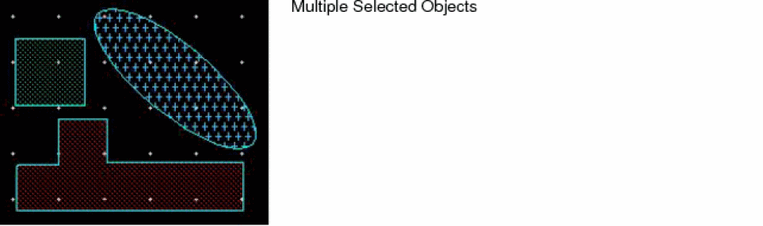
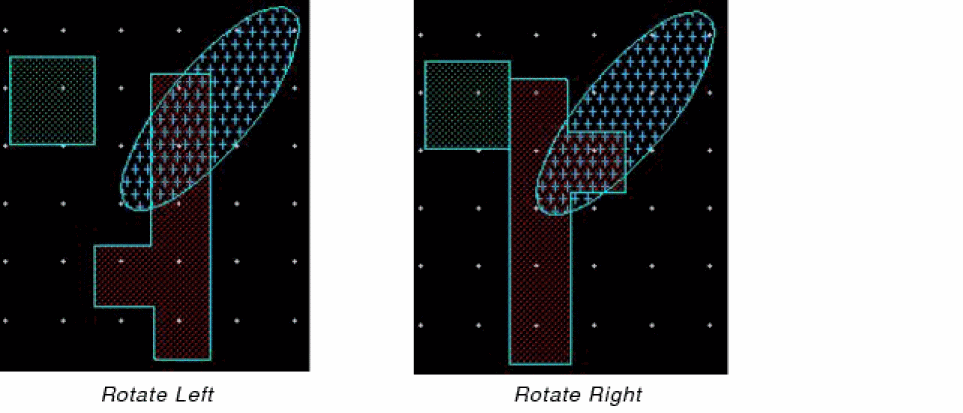
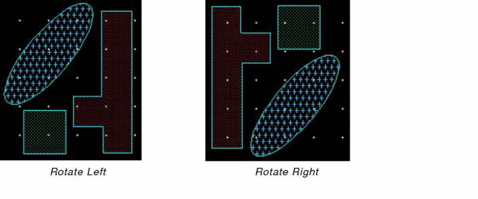
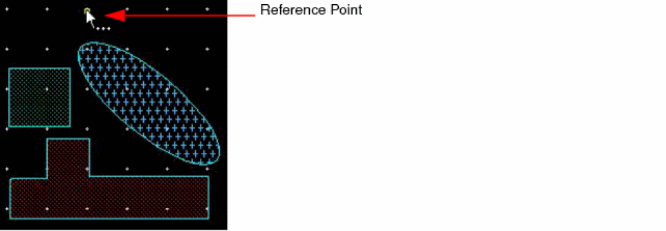

Rotating Multiple Objects
You can rotate multiple selected objects around their respective center points or around the center of their combined bounding box.
- Rotating Objects Around Their Own Center Points
- Rotating Objects Around the Combined Bounding Box
- Rotating Objects as a Group at a Specific Reference Point and Angle
Rotating Objects Around Their Own Center Points
To rotate multiple selected objects around their respective center points by using the Rotate Left or Rotate Right command:
- In the Layout Editor Options form, deselect the Rotate Around Combined BBox check box and click OK.
-
Select the objects on the canvas that you want to rotate.
 -
Select Rotate Left or Rotate Right, as required. You can access these commands from the Edit – Rotate menu or the Rotate shortcut menu on the canvas.
The following figures show the result when the Rotate Left or Rotate Right command is run on the selected set of objects shown in the previous figure.

Rotating Objects Around the Combined Bounding Box
To rotate multiple selected objects around the center of the combined bounding box of the selection set by using the Rotate Left or Rotate Right command:
- In the Layout Editor Options form, ensure the Rotate Around Combined BBox check box is selected.
-
Select the objects on the canvas you want to rotate.

-
Select Rotate Left or Rotate Right, as required. You can access these commands from the Edit – Rotate menu or the Rotate shortcut menu on the canvas.
The following figures show the result when the Rotate Left or Rotate Right command is run on the selected set of objects.

Rotating Objects as a Group at a Specific Reference Point and Angle
To rotate multiple selected objects as a group and by specifying a rotation reference point:
- Choose Edit – Rotate – Rotate to invoke the Rotate command.
- Select the objects on the canvas that you want to rotate.
-
Click on the canvas to specify the reference point.
 -
Press
F3to open the Rotate form. - Enter a value in the Angle Of Rotation field.
-
Click Apply.
The objects are rotated at the specified angle. The following figure illustrates the rotation at an angle of 20 degrees.
Related Topics
Return to top